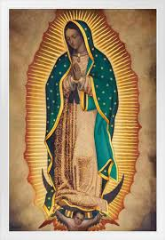
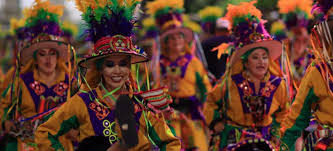
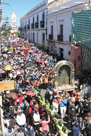
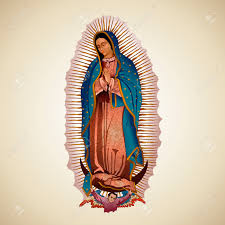

Celebración y Fe
La Entrada de la Virgen de Guadalupe es una festividad religiosa y cultural en Sucre, Bolivia, que reúne a miles de fieles y devotos.
Una Tradición Viva
Cada año, la ciudad de Sucre se viste de gala para recibir a la Virgen de Guadalupe, en una celebración que mezcla la fe y la cultura.



